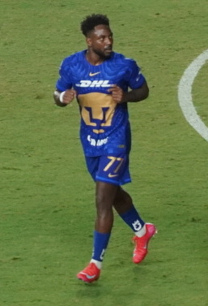
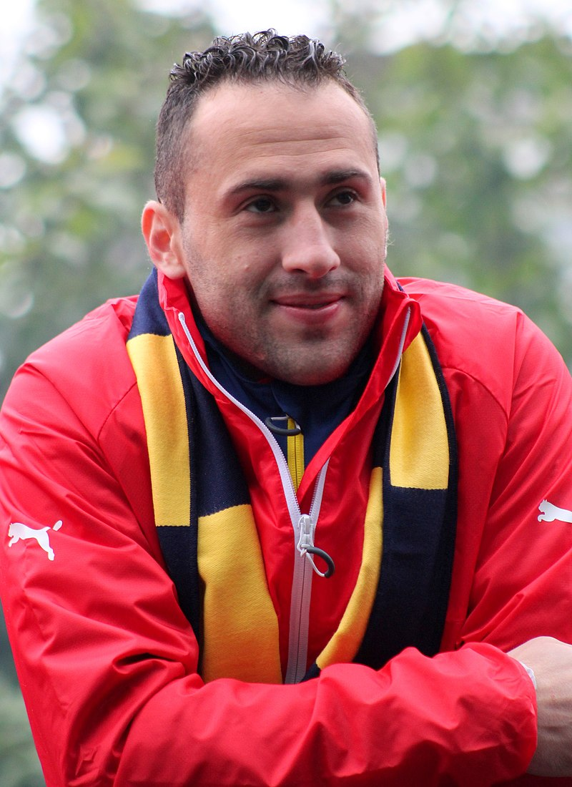
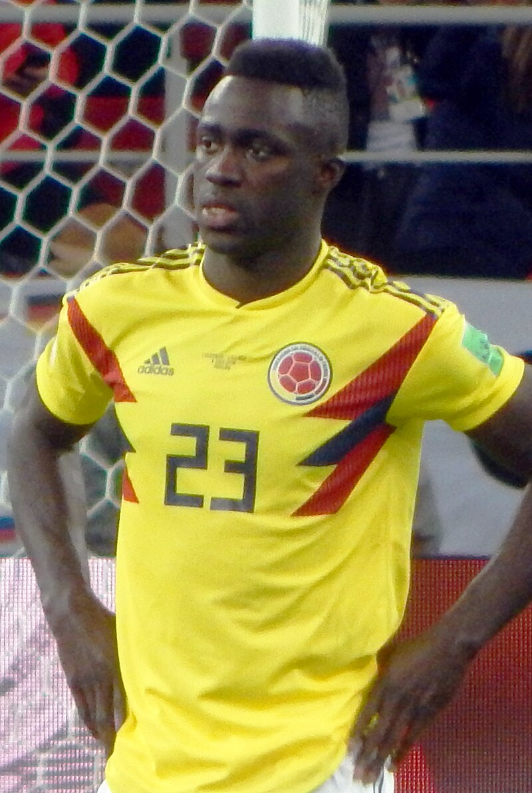
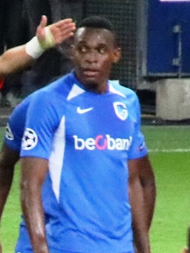
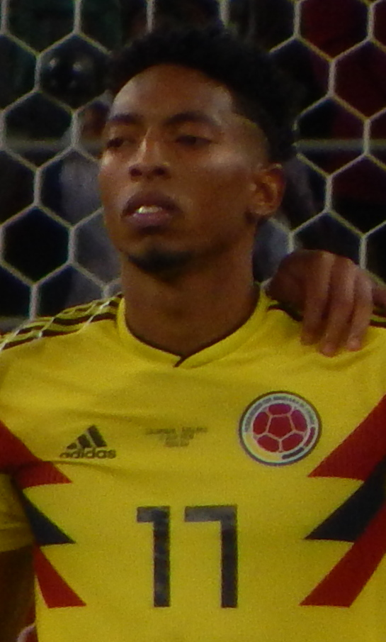
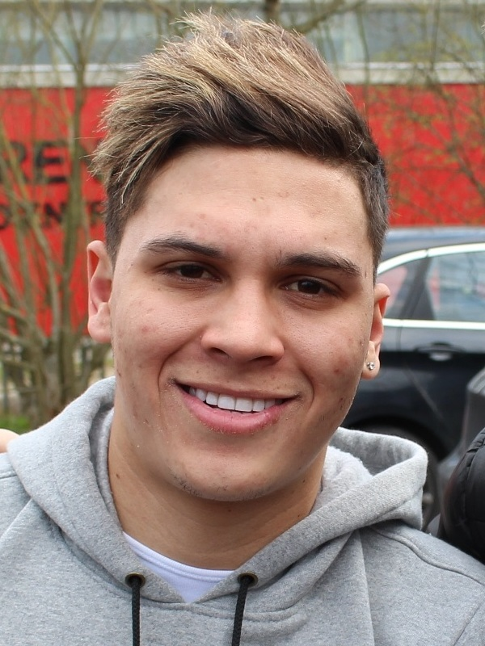
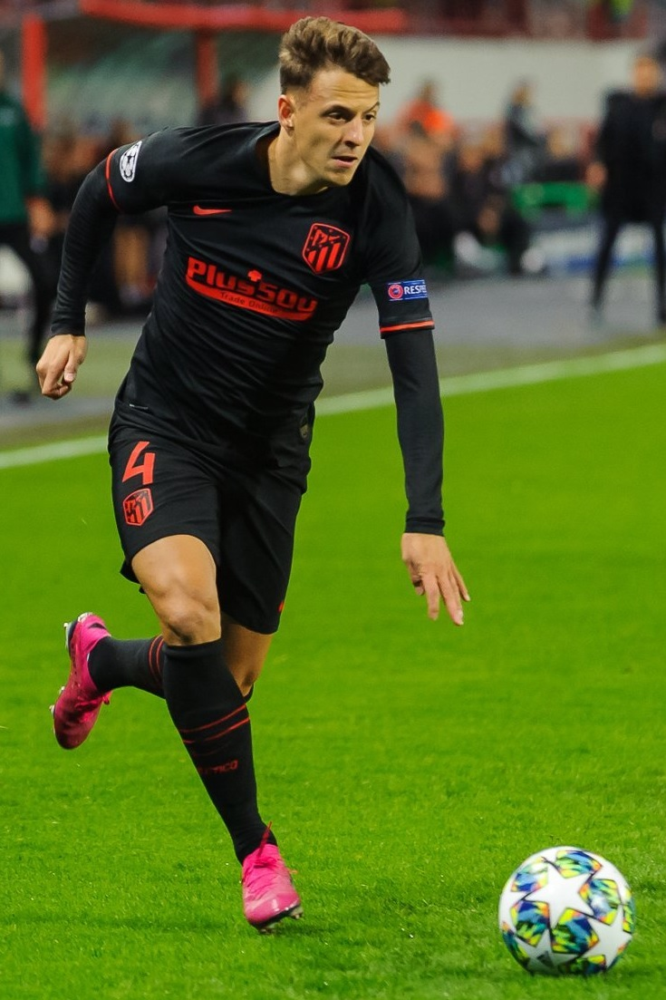

| Nombre | Posición | Edad | Bibliografía | Portada |
|---|---|---|---|---|
| Álvaro Angulo | Defensa central | 25 |
Álvaro Angulo es un defensa central sólido y comprometido, que se destaca por su marcaje y juego aéreo. Juega en la liga colombiana y ha sido convocado varias veces a la selección nacional. Su entrega en el campo lo convierte en un jugador confiable para el cuerpo técnico. |
 |
| David Ospina | Portero | 35 |
David Ospina es uno de los mejores porteros en la historia de Colombia. Actualmente juega en Napoli de Italia. Destaca por sus reflejos y liderazgo en el área. Ha sido titular en varias Copas América y Copas Mundiales. |
 |
| Davinson Sánchez | Defensa central | 27 |
Davinson Sánchez es un defensa central rápido y técnico que juega en Tottenham Hotspur de Inglaterra. Su solidez defensiva es fundamental para la selección. Ha participado en varias Copas Mundiales con Colombia. |
 |
| James Rodríguez | Mediocampista ofensivo | 32 |
James Rodríguez es uno de los mediocampistas más talentosos de Colombia. Destaca por su visión de juego, calidad en el pase y capacidad goleadora. Actualmente juega en Al-Rayyan SC. Ha sido pieza clave en torneos internacionales y la Liga de Campeones de la UEFA. |
 |
| Carlos Lerma | Mediocampista defensivo | 31 |
Carlos Lerma es un mediocampista defensivo colombiano, conocido por su capacidad de recuperación y distribución del balón. Ha jugado en varios equipos nacionales y es pieza clave en el mediocampo. Su experiencia y liderazgo en el terreno lo hacen un jugador fundamental para la selección. |
|
| Jhon Lucumí | Defensa central | 25 |
Jhon Lucumí es un defensa central con buen juego aéreo y fuerte en el marcaje. Actualmente juega en el Genk de Bélgica y ha sido convocado con frecuencia a la selección nacional. Su solidez defensiva aporta estabilidad al equipo. |
 |
| Luis Díaz | Extremo izquierdo | 26 |
Luis Díaz es un extremo izquierdo con gran capacidad goleadora y asistidora. Juega en Liverpool de Inglaterra y es una de las estrellas de la selección colombiana. Su explosividad y talento lo hacen una pieza fundamental en el ataque nacional. |
 |
| Johan Mojica | Defensa lateral izquierdo | 30 |
Johan Mojica es un lateral colombiano con gran velocidad y capacidad ofensiva. Actualmente juega en Elche CF en España, aportando tanto en defensa como en ataque. Ha sido parte de importantes competencias internacionales con la selección colombiana. |
 |
| Cristhian Mosquera | Defensa lateral izquierdo | 18 |
Cristhian Mosquera es un joven talento colombiano que juega como lateral izquierdo en el Arsenal de Inglaterra. Destaca por su velocidad, técnica y capacidad defensiva. Se proyecta como una de las futuras promesas del fútbol colombiano en Europa. |
|
| Juan Fernando Quintero | Mediocampista ofensivo | 30 |
Juan Fernando Quintero es un mediocampista creativo y habilidoso, conocido por sus pases precisos y tiros libres peligrosos. Ha jugado en clubes como River Plate y Shenzhen FC. Su experiencia internacional es valiosa para la selección colombiana. |
 |
| Santiago Arias | Defensa lateral derecho | 30 |
Santiago Arias es un lateral derecho con gran recorrido y buen desempeño defensivo. Actualmente juega en el Bayer Leverkusen de Alemania y ha sido una pieza importante en la selección nacional. Su versatilidad le permite ayudar tanto en defensa como en ataque. |
 |
| Yerry Mina | Defensa central | 28 |
Yerry Mina es un defensa central fuerte y contundente en el juego aéreo. Actualmente juega en Everton de Inglaterra y es un referente defensivo para Colombia. Su capacidad para anotar goles en jugadas de balón parado es destacada. |
 |